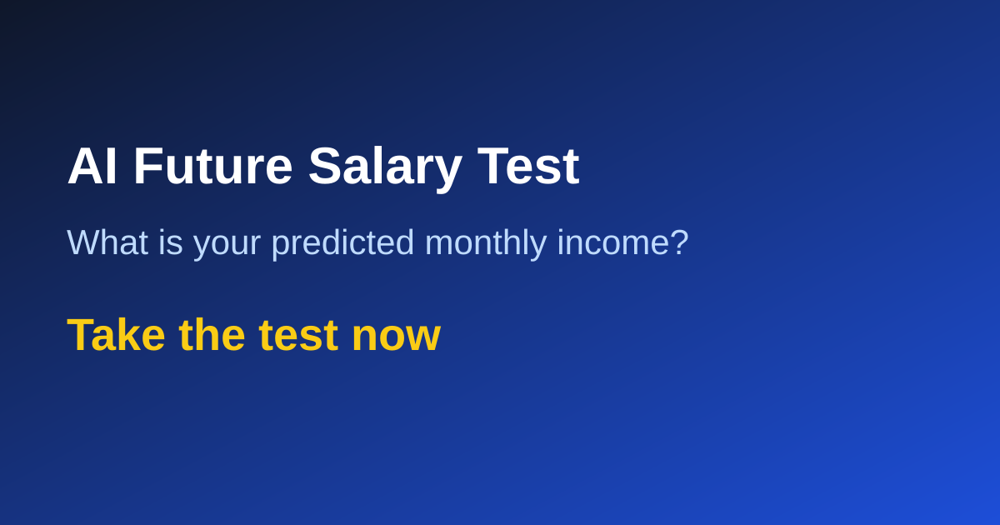

작성일: 2026년 3월 1일
작성자: 미래 월급 테스트 연구팀

연봉을 올리고 싶은데 무엇부터 해야 할지 모를 때, 대부분은 동기부여 콘텐츠를 더 찾아봅니다. 하지만 연봉 상승은 의지보다 설계의 문제입니다. 미래 월급 테스트를 활용해 자신의 현재 위치를 파악했다면, 다음 단계는 감정이 아니라 루틴을 만드는 것입니다. 루틴은 작아야 유지되고, 유지되어야 숫자로 증명됩니다. 이 글에서는 직장인이 실제로 실행 가능한 주간 루틴 설계법을 설명합니다.
먼저 원칙을 정해야 합니다. 연봉 상승에 기여하는 행동은 크게 세 가지입니다. 업무 성과를 높이는 행동, 시장 가치를 높이는 행동, 협상력을 높이는 행동입니다. 업무 성과는 지금 회사에서의 평가를 올리고, 시장 가치는 이직 옵션을 늘리며, 협상력은 같은 성과를 더 높은 보상으로 바꿉니다. 세 축이 동시에 돌아갈 때 월급이 구조적으로 상승합니다.
주간 루틴 예시는 다음과 같습니다. 월요일에는 지난주 성과를 숫자로 정리합니다. 완료한 업무, 개선한 지표, 절감한 시간처럼 추상어가 아닌 수치로 기록해야 합니다. 화요일과 목요일에는 45분씩 핵심 역량 학습을 진행합니다. 단순 시청보다 결과물이 남는 학습이 중요하므로, 짧은 자동화 도구, 문서 템플릿, 리포트 샘플 중 하나를 완성합니다. 수요일에는 채용 시장을 점검해 본인 직무의 기술 요구 변화와 연봉 범위를 업데이트합니다. 금요일에는 주간 리뷰를 하면서 "이번 주에 증명 가능한 가치가 쌓였는가"를 점검합니다.
여기서 많이 실패하는 포인트는 과한 계획입니다. 하루 3시간 학습, 매일 포트폴리오 업데이트 같은 계획은 2주를 넘기기 어렵습니다. 반대로 하루 30~45분이라도 고정 시간을 정하면 3개월 누적량이 커집니다. 루틴의 목표는 완벽한 하루가 아니라 포기하지 않는 주간 반복입니다. 또한 루틴은 캘린더에 넣어 예약해야 실행됩니다. "시간이 나면 한다"는 계획은 거의 실행되지 않습니다.
루틴 효과를 측정하는 방식도 정해야 합니다. 가장 간단한 지표는 세 가지입니다. 첫째, 월간 포트폴리오 산출물 개수. 둘째, 면접 제안 또는 네트워킹 접점 수. 셋째, 연봉 협상 시 활용 가능한 성과 문장 수입니다. 세 지표가 동시에 증가하면 연봉 상승 가능성이 높아집니다. 반대로 학습 시간만 늘고 산출물이 없다면 루틴을 수정해야 합니다. 시간은 투입 지표일 뿐, 보상은 결과 지표에 따라 결정됩니다.
마지막으로 월 1회 리밸런싱을 권장합니다. 미래 월급 테스트 결과를 다시 참고해 현재 루틴이 자신의 약점을 제대로 보완하는지 확인합니다. 예를 들어 결과가 "안정형"이라면 도전 과제 비중을 늘리고, "성장형"이라면 성과 문서화와 협상 연습을 강화하는 식입니다. 이렇게 루틴을 조정하면 테스트 결과와 실제 행동이 연결되고, 시간이 지나면서 연봉 상승 확률이 현실적으로 높아집니다.
결론적으로, 연봉은 단기 운보다 장기 루틴에 더 크게 반응합니다. 오늘 하루를 완벽하게 보내는 것보다, 다음 12주를 반복 가능하게 설계하는 것이 중요합니다. 작지만 측정 가능한 루틴을 시작하고 기록을 남기면, 미래 월급은 더 이상 막연한 기대가 아니라 관리 가능한 목표가 됩니다.